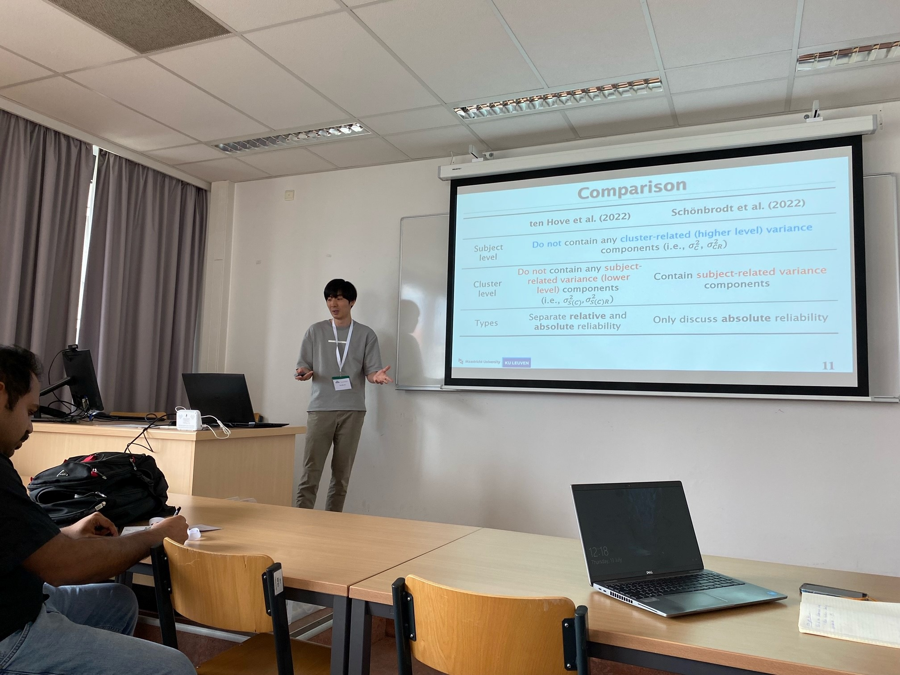
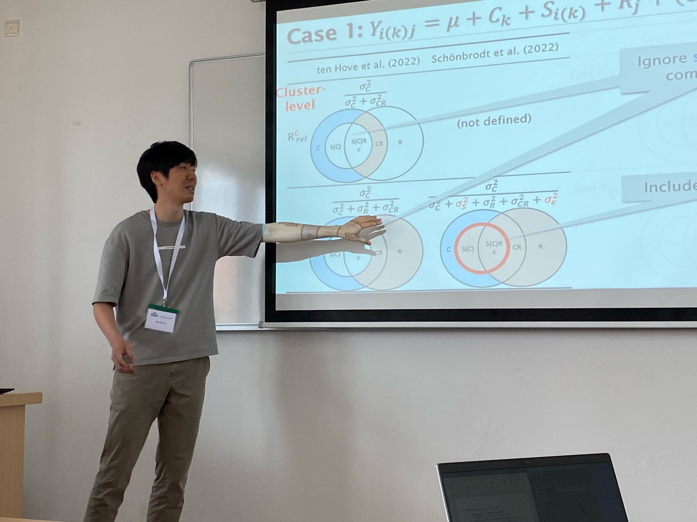

Reliability for multilevel data: A correlation approach
Conference: The 10th European Congress of Methodology (EAM 2023)
Location: Ghent University, Belgium
Time: 10-07-2023 ~ 13-07-2023
Title: Reliability for multilevel data: A correlation approach
Abstract: Studying the reliability of a measurement instrument is essential. Despite the awareness of the problem of measurement errors in psychology and medicine and the various reliability coefficients that have been proposed, research on reliability for multilevel data, which ubiquitously exist in observational studies, remains limited. Two recent papers (Schönbrodt et al., 2022; ten Hove et al., 2022) address how to quantify reliability in multilevel settings based on generalizability theory. Specifically, ten Hove et al. (2022) defined between-cluster and within-cluster interrater intraclass correlation coefficients for multilevel designs where subjects or raters are nested within clusters. Schönbrodt et al. (2022) also defines reliability coefficients at betweencluster and within-cluster (i.e., between-subject) levels for designs where dyad members nested in couples are assessed numerous times daily over a number of days. Nevertheless, both approaches give inconsistent results regarding their definition of cluster-level reliability. In this paper, we propose an alternative approach to define reliability coefficients that are based on calculating the expected correlation between repeated measurements (Molenberghs et al., 2007; Vangeneugden et al., 2005). We will compare our approach with that of Schönbrodt et al. (2022) and ten Hove et al. (2022) and explain the differences between the three approaches in two common nested data structures: (1) raters crossed with both subjects and clusters, but subjects are nested within clusters and (2) raters nested within both subjects and clusters. To conclude, we will provide guidelines to measure reliability in multilevel data structures.
Slide:

